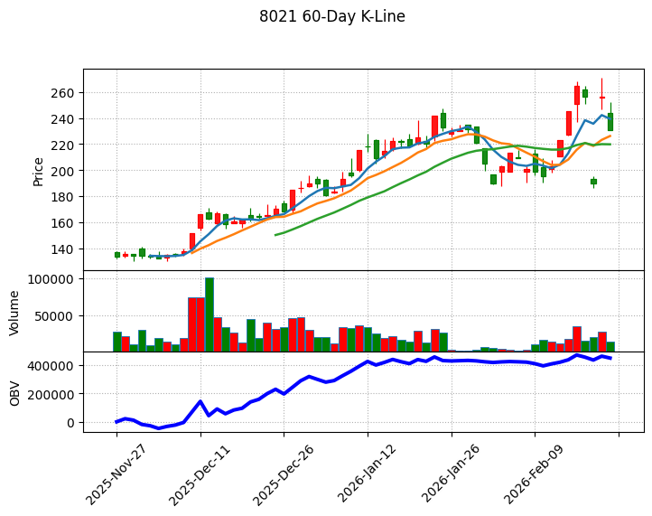

8021 尖點 深度研究報告：AI 伺服器浪潮下的 PCB 精密耗材龍頭
一句話摘要
受惠 AI 伺服器帶動高多層板（HLC）需求爆發，尖點憑藉「高階鍍膜鑽針」轉型與「泰國產能佈局」雙引擎，2026 年進入獲利倍增的高速成長期。

公司概覽
尖點（8021）為全球第四大 PCB 鑽針製造商，提供「鑽針銷售」與「鑽孔服務」雙軌營運模式。核心產品聚焦於高精度、高附加價值的鍍膜技術，主要應用於 AI 伺服器、HPC 及 IC 載板。
營收結構（截至 2025 Q3 法說會資料）：| 項目 | 佔比 | 備註 |
|---|---|---|
| PCB 鑽針銷售 | 65.7% | 核心產品，高階鍍膜針佔比持續提升 |
| 鑽孔代工服務 | 34.3% | 涵蓋機械鑽孔與雷射鑽孔 |
| 區域：中國大陸 | 59% | 主要生產與銷售基地 |
| 區域：台灣 | 36% | 高階研發與先進製程中心 |
| 區域：其他 | 5% | 泰國廠量產後預計 2026 年佔比破 10% |
核心競爭優勢
財務分析
近期月營收趨勢：| 年月份 | 月營收 (億元) | 月增率 (MoM) | 年增率 (YoY) | 備註 |
|---|---|---|---|---|
| 2026/01 | 4.53 | -2.77% | +59.17% | 歷史次高，營運淡季不淡 |
| 2025/12 | 4.66 | +6.50% | +44.29% | 單月歷史新高 |
| 2025/11 | 4.38 | +0.01% | +39.19% | 訂單能見度極高 |
| 2025/10 | 4.38 | +4.60% | +38.74% | 高階產品出貨暢旺 |
| 2025/09 | 4.18 | +7.33% | +29.90% | 產能利用率快速攀升 |
| 2025/08 | 3.90 | +8.06% | +21.71% | 營收重回成長軌道 |
- 2024 年度： 營收 35.41 億元，EPS 1.45 元。
- 2025 年度： 營收 44.10 億元（年增 24.5%），EPS 2.45 元。
- 2026 預估： 隨 3500 萬支新產能全數開出，法人普遍預期 EPS 挑戰 4.00 - 6.50 元。
法說會重點（2025/11 & 2026/02 綜整）
- 產品組合優化： 目標 2026 年高階鍍膜鑽針營收佔比提升至 60% 以上（2025 年約 45-50%）。
- AI 需求結構性轉變： AI 伺服器（如 GB200）板材硬度高且孔徑微細化，鑽針消耗量較傳統伺服器增加 4-5 倍，且不可重磨再用，帶動「量價齊揚」。
- 訂單能見度： 核心客戶需求強勁，目前訂單能見度已看至 2026 年第二季底，稼動率維持在 90% 以上的高位。
券商觀點（2026 年初最新數據）
| 券商名稱 | 報告日期 | 評等 | 目標價 | 2026 EPS 預估 |
|---|---|---|---|---|
| 中信證券 | 2026/01/27 | 強力買進 | 300 元 | 6.00 元 |
| 凱基投顧 | 2026/01/14 | 買進 (調升) | 260 元 | 6.50 元 |
| 福邦投顧 | 2026/01/08 | 買進 | 230 元 | 5.20 元 |
財報深度分析
利潤率趨勢表格：| 期間 | 毛利率 (GPM) | 營業利益率 (OPM) | 稅後淨利率 (NPM) | 備註 |
|---|---|---|---|---|
| 2025 Q3 | 31.3% | 15.9% | 11.1% | 高階產品佔比過半 |
| 2025 Q2 | 29.4% | 12.1% | 7.7% | 稼動率回升至 90% |
| 2025 Q1 | 26.8% | 7.9% | 4.8% | 傳統淡季影響 |
| 2024 Q4 | 27.2% | 8.4% | 5.1% | 營運落底轉強 |
- 資本支出： 2025 年支出約 5-6 億元；2026 年預計支出將 >6 億元，重點投入中壢二廠與泰國二期。
- 購置資產： 2026/02 決議投入 5.6 億元 購置新北不動產，擴充研發中心。
- 存貨天數： 2025 Q3 降至 89.77 天（2024 年初 >100 天），顯示庫存去化極佳，供不應求。
股權異動與籌資紀錄
- 可轉換公司債（CB）： 2026/01 發行「尖點二」（80212），面額 7 億元，轉換價 203.5 元。
- 現金增資： 2026/01 完成，發行 3000 張，價格 127 元。
- MSCI 納入： 2026/02/25 獲選納入 MSCI 全球小型指數成分股，帶動外資法人被動資金大量流入。
產業分析
全球 PCB 鑽針競爭格局 (2025 數據)：| 排名 | 公司名稱 | 市佔率 | 優勢與定位 |
|---|---|---|---|
| 1 | 鼎泰高科 | 28.9% | 中國龍頭，規模化與成本優勢 |
| 2 | 金洲精工 | 20.8% | 具上游原料背景，切入中低階 |
| 3 | Union Tool | 14.0% | 日本技術領先者，高標定價 |
| 4 | 尖點科技 | 10.0% | 性價比之王，唯一具備大規模服務+產品模式 |
- 材料革命： 2026 年 NVIDIA Rubin 平台預計導入石英玻璃材料，鑽針壽命將從 600 孔進一步降至 200 孔，屆時鑽針消耗量將再迎來一波翻倍成長。
- 原料成本： 鎢鋼成本受中國出口管制影響。尖點已於 2025 年底成功調漲白針價格 15%，轉嫁能力強。
近期催化劑（Catalysts）
- 利多：
2. 2026/03/06 法說會，市場期待管理層上修全年 Guidance。
3. 與 臻鼎-KY (4958) 簽署戰略合作，鞏固先進封裝載板市佔。
- 利空：
2. AI 伺服器終端拉貨若出現暫時性空窗期（Gap）。
⭐ 成長動能時間軸
- 2025 Q4： 泰國廠正式量產貢獻營收（代鑽服務）。
- 2026/01： 鑽針總產能從 3100 萬支/月 提升至 3500 萬支/月。
- 2026 Q2： 高階鍍膜針產能拉升至 1800 萬支/月，佔比挑戰 60%。
- 2026 H2： 評估泰國廠建置「鑽針工具生產線」，達成在地供貨。
- 2026 全年： 泰國廠營收佔比預計突破 10%。
2026 展望
- 成長動能：
* 產品組合轉向高毛利鍍膜針，帶動整體毛利率重回 33-35% 歷史高峰水準。
* 東南亞 PCB 聚落成形，尖點具備泰國在地服務優勢。
- 潛在風險：
* 高額資本支出帶來之折舊攤銷壓力。
投資結論
本報告由 AI 自動產生，資料來源為公開網路資訊，僅供參考，不構成投資建議。產生時間：2026-03-01 02:55
📊 資訊卡